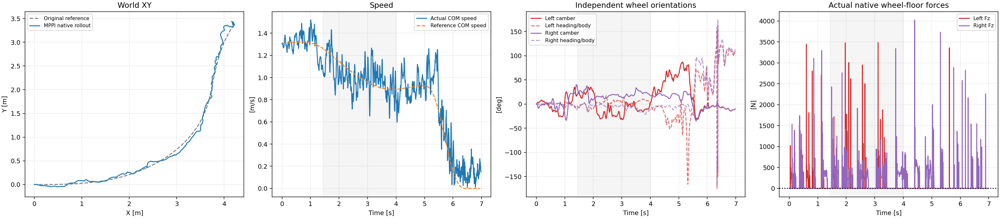
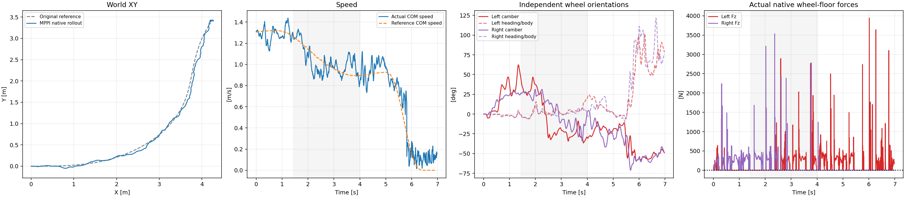

Both searches completed. Neither produced a stable-contact, task-feasible reference.
MuJoCo3.8.1, μ=0.7,400Hz physics and50Hz held commands. Six leg commands and two wheel torques are independent; world wheel camber and heading are measured from the resulting full-body pose. Original car XY,COM speed and nonzero body β are tracking targets. No absolute height or wheel XY target is added. Contact forces are simulated outputs, never free planning variables.
The second arm adds a causal first-order command filter (α=0.25 legs,0.5 wheels) inside both prediction and execution. All search budgets, costs and physical motors are otherwise held fixed. This is a new trajectory-planning cost, not the earlier matched-PPO reward experiment. No PPO actor, CEM action seed, GPU or new native compilation was used.
| Attempt | Core XY RMSE [m] | Core speed retention | β RMSE [deg] | Core HF/original PPO | Any-wheel support | Longest gap [ms] | All9 checks |
|---|---|---|---|---|---|---|---|
| Independent MPPI | 0.090 | 97.9% | 8.2 | 0.921 | 39.3% | 310.0 | FAIL |
| MPPI with predicted command smoothing | 0.093 | 99.3% | 14.0 | 0.419 | 55.7% | 322.5 | FAIL |
Core:1.44–4.00s; support:0.02–6.96s,actual upward wheel-floor Fz>5N at every2.5ms sample. A single lifted wheel is allowed. HF means10<f<100Hz world angular XY RMS relative to the original same-engine400Hz PPO. The original task scoring reference is unchanged. Full-body videos show loss of posture in both attempts despite small XY error.
Continuous, open-loop action replay reproduces all recorded qpos,qvel and floor-normal loads exactly (maximum errors0). Each attempt has349 decisions and2793 native states. No state correction or reset splice is applied.
Instantaneous slip is actual material-point velocity relative to the floor projected into its tangent plane: vₜ=(I−nnᵀ)[vCOM+ω×(p−pCOM)−vground]. Lateral slip is its component along the projected wheel axle. Per-wheel RMS over actual loaded contact points avoids sign cancellation. No loaded contact means unobserved slip, not zero-slip rolling.
A sustained lateral-sliding event additionally requires the same wheel to remain force-supported, moving and above0.05m/s lateral RMS continuously for at least50ms. Geometry-point identities may change during rolling. No unsupported gaps are bridged. These are diagnostic thresholds, not universal physical phase boundaries. Neither attempt has such a sustained event in the turn core.
Friction saturation is a separate diagnostic. Circular/elliptic utilization uses sqrt[Σ(Fti/μiFn)²]. This experiment uses MuJoCo condim3 pyramidal contact, whose physical force section instead obeys Σ|Fti|/(μiFn)≤1. Its L1 diamond is inscribed in the elliptic cone; the Euclidean ratio can be below1 on the actual pyramid boundary. Velocity plus sustained contact identifies sliding; proximity to the correct force boundary supports interpretation but does not replace velocity measurement. MuJoCo primary documentation.
Video · Audit · Sliding events · Failed candidate motion NPZ

Video · Audit · Sliding events · Failed candidate motion NPZ

Use the hash-bound existing model and MuJoCo3.8.1 native ABI3 library from summary.json. Source MuJoCo/C++ bridge is already in the repository; no implicit build is performed. The published material-report copy contains configuration and reset state only, no model weights or credentials. Fresh output directories are required.
python scripts/generate_mppi_contact_reference.py --material-report results/mppi_contact_reference_20261025_v1/inputs/original_native_material_report.json --output-dir outputs/mppi_reproduction_plain python scripts/generate_mppi_smooth_contact_reference.py --config config/mppi_smooth_contact_reference_v1.json --material-report results/mppi_contact_reference_20261025_v1/inputs/original_native_material_report.json --output-dir outputs/mppi_reproduction_smooth python scripts/audit_mppi_contact_reference.py --run outputs/mppi_reproduction_plain --output-dir outputs/mppi_reproduction_plain_audit python scripts/screen_mppi_sliding.py --run outputs/mppi_reproduction_plain --audit outputs/mppi_reproduction_plain_audit --output outputs/mppi_reproduction_plain_audit/sliding.json python scripts/render_mppi_contact_reference.py --run outputs/mppi_reproduction_plain --audit outputs/mppi_reproduction_plain_audit --output-dir outputs/mppi_reproduction_plain_render
All measurements,source/input hashes,solver logs,full replay recordings and failed candidate references are retained beside this report. Tests cover native first-interval parity,causal filter parity,reference streams,and rejection of false sustained-slip events across gaps or alternating wheels. The cameras keep a fixed1.9m distance and root-relative offset; XY scale is fixed throughout. Neither NPZ is approved as a successful policy-training reference.